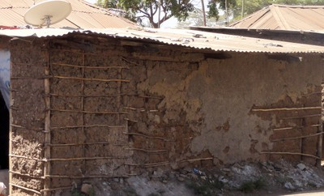

Bambú , caña o cuerda reforzados [RB]
La pared es de bambú , caña o cuerda reforzada , ya que a veces se utiliza en muros de adobe.

Tapia con refuerzo de bambú, Kenya (K. Jaiswal)

Pared de Adobe con refuerzo vertical de caña, Peru (M. Blondet)

Pared de Adobe con refuerzo de caña, Peru (S. Brzev)